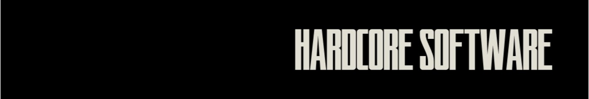
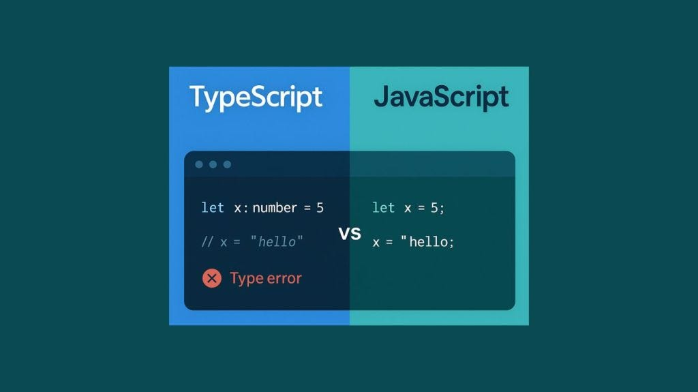

Documentazione del Progetto
Il 14 gennaio 2026 le classi quarte hanno incontrato i rappresentanti di Polarity, azienda nel settore dello sviluppo software. Due ore di orientamento sul mondo delle applicazioni web moderne: tecnologie, linguaggi e logiche di lavoro di un team professionale.
I rappresentanti si sono presentati e hanno introdotto il tema dell'incontro, con l'obiettivo di mostrare cosa significhi oggi sviluppare un prodotto digitale professionale.

Un'app come WhatsApp non è un prodotto unico: è composta da client mobile, server, database e infrastruttura cloud. Realizzarla su tutti i dispositivi richiede un lavoro molto più complesso di quanto sembri.
JavaScript nasce per il browser ma oggi gira ovunque: sul server con Node.js, come app desktop con Electron e su mobile tramite compilatori. TypeScript ne estende le capacità garantendo rigore nei progetti complessi.

Chi sviluppa su commissione deve rispettare requisiti precisi ( compatibilità, sicurezza, responsività ) e risponde legalmente della qualità del prodotto. La qualità del codice è una responsabilità professionale, non una scelta estetica.
Un incontro coinvolgente che ha saputo unire tecnica e visione imprenditoriale. Ho capito meglio cosa significa trasformare un'idea in un prodotto digitale reale, aprendo prospettive concrete sul lavoro nel settore informatico.
L'incontro ha consolidato la comprensione dell'architettura web moderna e dell'ecosistema JavaScript, offrendo una visione concreta e professionale dello sviluppo software.
| Competenza | Descrizione |
|---|---|
| Competenza digitale | Approfondimento dei principi tecnici dello sviluppo software moderno: architettura client-server, JavaScript, Node.js, TypeScript, Electron. |
| Competenza matematica e di base in scienze e tecnologie | Comprensione dei fondamenti tecnici delle applicazioni web e della loro distribuzione su più piattaforme. |
| Competenza imprenditoriale | Capacità di tradurre idee in prodotti digitali concreti, operando con senso di responsabilità e iniziativa in un contesto professionale reale. |